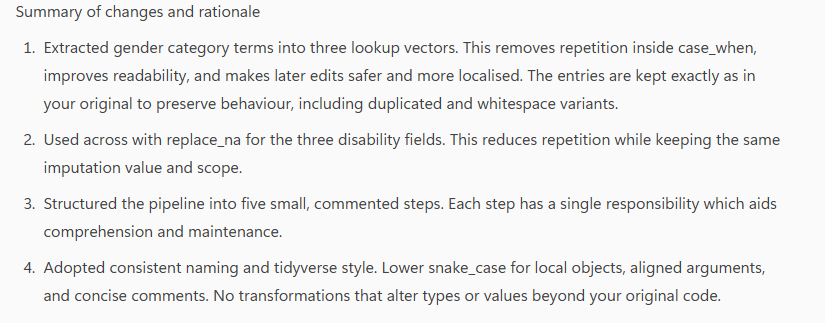
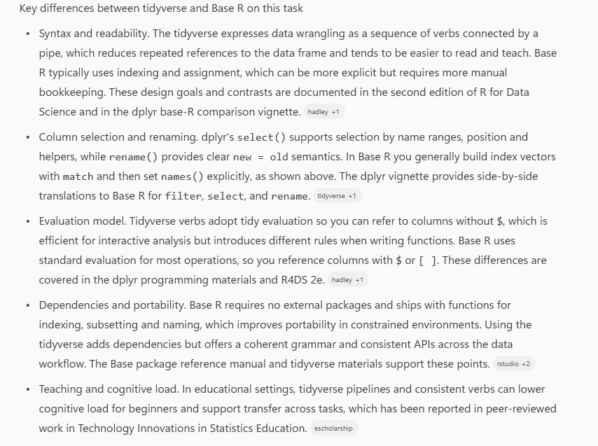

5 Code review
In this chapter you’ll learn how to use AI to perform a code review and to add comments to your code. As you’ve already hopefully learned by working through this book, you have to be critical about anything the AI produces or suggests because it has no expert knowledge, but it can be a useful tool for checking and improving your code.
DeBruine et al’s Code Check Guide details what a comprehensive code check refers to:
- Does it run? Can a researcher who uses that progamming language run it easily? Are any unusual or complex procedures explained?
- Is it reproducible? Do you get the same outputs? Is it straightforward to check them?
- Is it auditable/understandable? Even if you don’t have the expertise to assess the stats or data processing, is the code well-organised enough to figure out what is intended so mistakes could be detected? Are the outputs sufficiently detailed to allow interrogation?
- Does it follow best practices? Is there too much repeated code that could benefit from modularisation? DRY (Don’t repeat yourself) and SPOT (Single Point of Truth)? Are the outputs of long processes saved and loaded from file? Do the variable names make sense? Do the results match what is shown in the output and there is no rounding up or down?
- Is it correct and appropriate? Is the code actually doing what is intended? Is what is intended correct? Some logical problems can be caught without domain knowledge, such as intending to to filter out male subjects, but actually filtering them IN. Many other problems require domain and/or statistical knowledge, so may only be appropriate in some circumstances.
However, some of these steps cannot (and should not) be performed by an AI. Unless you have specific ethical approval and have included this in your data management plan, you should never upload your research data to an AI tool. This means that assessing reproducibility is difficult. The AI also doesn’t know what you intended to do, and why, and has no subject knowledge so it can’t advise on anything theoretical without you giving it that information explicitly.
Therefore, what we’ll focus on in this chapter is two components of code review: comments and refactoring your code.
5.1 Code comments
Code comments are lines or sections of text added within the code itself that are ignored by the computer when the program runs. They’re there for human readers, not machines. In R, you add comments to code by adding # to the start of the string:
Comments are useful for several reasons:
- Clarification: They explain what certain parts of the code do, making it easier for others (and yourself) to understand the logic and flow of the code.
- Documentation: They provide information on how the code works or why certain decisions were made, which is helpful for future reference.
- Debugging: Temporarily commenting out parts of code can help isolate sections that may be causing errors, without deleting the code.
- Collaboration: In team projects, comments can be used to communicate with other developers about the status or purpose of the code.
Overall, comments are a crucial part of writing clean, maintainable, and collaborative code. They help make the code more accessible and understandable to anyone who might work on it in the future.
5.2 Adding comments with AI
First we’ll use use the palmerpenguins dataset again.
You can use AI tools to help add comments to your code. Previous experience has taught us that we need to be a bit specific with what we want the AI to do so we’ll give it a clear prompt.
For this chapter, be very, very careful to ensure you are using GPT-5, not GPT-4. The performance of GPT-5 is significantly better and avoids introducing errors into your code.
In Copilot, input the below code with the prompt:
Add comments to this code. Keep the comments as concise as possible. Ask me any questions about the code if you are not sure what it is doing or why. Do not change anything about the code.
Here’s its suggested comments:
# Clean data, convert factors to character, and create a combined label
penguins_clean <- penguins %>% # start from the penguins data
filter(complete.cases(.)) %>% # keep only rows with no missing values in any column
mutate(across(where(is.factor), as.character)) %>% # convert all factor columns to character
mutate(species_sex = interaction(species, sex, sep = "_")) # new factor combining species and sex, e.g., "Adelie_female"However, the AI can only tell you what the code is doing, it can’t say why you chose to do that. The more complex your analysis, the more crucial it becomes to explain the rationale and so ensuring your prompt encourages the AI to ask for clarification is vital and in order to be able to answer these questions you need to know your data and what you’re trying to achieve.

5.3 Review existing comments
In addition to asking AI to comment your code, you can also ask it to review comments you’ve made yourself. To see how this works with a more complex example, and as an act of masochism, I gave the AI some code I wrote for a publication. The full paper is here if you’re interested - the quant analyses ended up being punted to the online appendix because of word count.
The first section of my code involves quite a complicated and long bit of wrangling, all done in a single pipeline. The purpose of the code is to clean up data collected on the survey platform Qualtrics and recode some of the demographic variables. This is actually a shortened version because the original hit the character limit for Copilot. I did put some effort into writing comments before publication but there are almost certainly improvements to be made.
Provide the code with the following prompt followed by the code:
Please review the comments in my code and improve them where needed. Make comments clear, concise, and useful for someone reading the code for the first time. Keep the meaning of existing comments, but reword or simplify them for better readability. Add comments only where they genuinely help understanding (e.g., explaining intent or logic, not obvious code). Do not change any of the code itself. After editing, explain your reasoning for each change — briefly describe why the original comment needed improvement (e.g., too long, unclear, redundant, missing context, etc.).
dat <- dat_raw%>%
filter(Progress > 94, # remove incomplete responses
DistributionChannel != "preview") %>% # Remove Emily's preview data
select(ResponseId, "duration" = 5, Q5:Q21) %>%
# replace NAs with "none" for disability info
mutate(disability_nos = replace_na(disability_nos, "None"),
physical_chronic = replace_na(physical_chronic, "None"),
mental_health = replace_na(mental_health, "None"),
) %>%
# recode gender data
mutate(gender_cleaned = case_when(Q6 %in% c("Female", "female", "Woman", "woman", "Cisgender woman","female (she/her)", "F", "f", "Womxn", "Woman (tranas)") ~ "Woman",
Q6 %in% c("Man", "man", "M", "m", "Male (he/him)", "Male", "male", "Trans man.") ~ "Man",
Q6 %in% c("Agender", "Genderfluid", "GNC", "NB", "non-binary", "
Non-binary", "Non-Binary", "Non-binary femme", "non-binary male", "non binary",
"Non binary", "Nonbinary", "Queer", "Transmasculine", "Non-binary") ~ "Non-binary",
TRUE ~ "Not stated")) %>%
# select necessary columns and tidy up the names
select(ResponseId,
"age" = Q5,
"gender" = Q6,
"mature" = Q7,
"level_study" = Q8,
"country" = Q9,
"subject" = Q10,
"english_first" = Q11,
"neurotype_open" = Q13,
"disability_open" = Q14,
"why_open" = Q18,
"how_open" = Q23,
"advantages" = Q20,
"disadvantages" = Q21,
everything()) In an earlier version of this book, providing this prompt resulting in it changing the code without telling me so that not only did it not do what I intended but it also didn’t work so you need to be very, very careful.
Using GPT-4 for this task resulted in incorrect comments, which then affected subsequent reasoning.
To check that it hasn’t changed any code you can run all.equal() to compare two datasets. If it returns true, it means that the result of your initial code and the new code are identical. This is a really important check.
Here’s the code with the new comments:
# this is the code copied from Copilot with the edited comments
dat_copilot <- dat_raw %>%
filter(Progress > 94, # keep responses with >94% progress
DistributionChannel != "preview") %>% # exclude preview/test responses
select(ResponseId, "duration" = 5, Q5:Q21) %>% # select ID, rename column 5 as 'duration', keep Q5–Q21
# fill missing disability-related fields with "None"
mutate(disability_nos = replace_na(disability_nos, "None"),
physical_chronic = replace_na(physical_chronic, "None"),
mental_health = replace_na(mental_health, "None"),
) %>%
# standardise gender responses into four categories
mutate(gender_cleaned = case_when(Q6 %in% c("Female", "female", "Woman", "woman", "Cisgender woman","female (she/her)", "F", "f", "Womxn", "Woman (tranas)") ~ "Woman",
Q6 %in% c("Man", "man", "M", "m", "Male (he/him)", "Male", "male", "Trans man.") ~ "Man",
Q6 %in% c("Agender", "Genderfluid", "GNC", "NB", "non-binary", "
Non-binary", "Non-Binary", "Non-binary femme", "non-binary male", "non binary",
"Non binary", "Nonbinary", "Queer", "Transmasculine", "Non-binary") ~ "Non-binary",
TRUE ~ "Not stated")) %>%
# rename key columns for clarity and keep all remaining variables
select(ResponseId,
"age" = Q5,
"gender" = Q6,
"mature" = Q7,
"level_study" = Q8,
"country" = Q9,
"subject" = Q10,
"english_first" = Q11,
"neurotype_open" = Q13,
"disability_open" = Q14,
"why_open" = Q18,
"how_open" = Q23,
"advantages" = Q20,
"disadvantages" = Q21,
everything())
# then we can test if the two objects are identical to ensure it hasn't changed anything
all.equal(dat, dat_copilot)[1] TRUEall.equal() returns true
5.4 Refactoring code
Refactoring means improving the structure of your code without changing what it does. You are not adding new features or fixing bugs—you are just making the code cleaner, easier to read, and easier to work with. Refactoring is like tidying your desk: everything still works the same, but it is more organised and makes future work easier.Refactoring helps you:
- Make your code easier to read: So that you (and others) can quickly understand what it does later on.
- Simplify your code: Break big, messy pieces into smaller, easier-to-manage parts.
- Keep your code easy to update: Clean, consistent code makes it easier to fix bugs or add new features later.
- Avoid repeating yourself: You can spot and remove duplicated or unnecessary code.
- Sometimes make it faster: Tidier code can help your program run more efficiently.
- Spot hidden problems: While cleaning up, you might notice bugs or logic errors that you had missed before.
Are you using GPT-5 as instructed? The next section goes very badly if you aren’t.
We’ll stick with the example of code from my publication because it’s complicated enough that there are likely improvements or alternative solutions. Enter the following prompt followed by the code (use the original, not the Copilot commented version):
I would like you to refactor the following code. Keep the behaviour and output exactly the same, but make the code cleaner, easier to read, and more efficient. Please:
Add helpful comments where needed. Use clear and consistent variable and function names. Remove any unnecessary repetition. Break long sections into smaller, logical parts if possible. Follow good coding style for R and use a tidyverse approach where possible. After refactoring, briefly explain what changes you made and why.
Here’s the refactored code it gave me:
# Lookup vectors for gender recoding (kept exactly as in the original lists)
woman_terms <- c(
"Female", "female", "Woman", "woman", "Cisgender woman",
"female (she/her)", "F", "f", "Womxn", "Woman (tranas)"
)
man_terms <- c(
"Man", "man", "M", "m", "Male (he/him)", "Male", "male", "Trans man."
)
nonbinary_terms <- c(
"Agender", "Genderfluid", "GNC", "NB", "non-binary", "
Non-binary", "Non-Binary", "Non-binary femme", "non-binary male", "non binary",
"Non binary", "Nonbinary", "Queer", "Transmasculine", "Non-binary"
)
dat_copilot <- dat_raw %>%
# 1) Filter valid responses
filter(
Progress > 94, # keep responses with > 94% progress
DistributionChannel != "preview" # exclude preview/test responses
) %>%
# 2) Keep required columns and rename column 5 to 'duration'
select(ResponseId, duration = 5, Q5:Q21) %>%
# 3) Impute missing disability-related fields with "None"
mutate(across(
c(disability_nos, physical_chronic, mental_health),
~ replace_na(.x, "None")
)) %>%
# 4) Standardise gender responses into four categories
mutate(
gender_cleaned = case_when(
Q6 %in% woman_terms ~ "Woman",
Q6 %in% man_terms ~ "Man",
Q6 %in% nonbinary_terms ~ "Non-binary",
TRUE ~ "Not stated"
)
) %>%
# 5) Rename key variables for clarity and keep all remaining variables
select(
ResponseId,
age = Q5,
gender = Q6,
mature = Q7,
level_study = Q8,
country = Q9,
subject = Q10,
english_first = Q11,
neurotype_open = Q13,
disability_open = Q14,
why_open = Q18,
how_open = Q23,
advantages = Q20,
disadvantages = Q21,
everything()
)
Again, it’s very important to check that this refactored code has the same result as the original. There is no shortcut for knowing and checking your data.
5.5 Alternative approaches
In the PsyTeachR courses, we mainly use the tidyverse approach because it provides a consistent, easy-to-read way of writing R code. The tidyverse is a collection of R packages (such as dplyr, ggplot2, and tidyr) that extend R’s core functionality and make data analysis more intuitive.
However, it is also useful to understand Base R, which refers to the set of functions that come built into R itself. Base R does not rely on any additional packages, so it works “out of the box” as soon as you install R. This means your code will run anywhere, even if tidyverse packages are not installed.
Ask Copilot to write the code in Base R using the following prompt. Rather than give it the full code, we’re just going to do the first few lines that filter and select.
Please rewrite the following code using Base R instead of tidyverse functions. Keep the same behaviour and output. When you rewrite it, please use only Base R functions (no tidyverse or other external packages).Add short, clear comments explaining what each main step does. After showing the Base R version, explain the key differences between the tidyverse and Base R approaches — for example, syntax style, readability, and performance. If there are trade-offs (e.g., tidyverse is easier to read but Base R runs without extra packages), explain those too.
Here’s the Base R version. I’ll confess I have no idea if this is the approach you would take because I never code in Base R (because look at it, it’s horrible).
## 1) Filter valid responses
dat_tmp <- dat_raw[dat_raw$Progress > 94 &
dat_raw$DistributionChannel != "preview",
, drop = FALSE]
## 2) Keep required columns and rename column 5 to 'duration'
keep_idx <- c(
match("ResponseId", names(dat_tmp)), # ResponseId
5L, # original column 5
match(paste0("Q", 5:21), names(dat_tmp)) # Q5:Q21 by name
)
keep_idx <- unique(keep_idx[!is.na(keep_idx)]) # remove NAs, keep order
dat_copilot <- dat_tmp[, keep_idx, drop = FALSE]
## rename the selected column that came from original position 5
pos5 <- which(keep_idx == 5L)
if (length(pos5) == 1L) names(dat_copilot)[pos5] <- "duration"
5.6 Conclusions
I hadn’t actually used AI to perform these types of tasks before writing this book so here’s my takeaways:
- CHECK EVERYTHING.
- If you give an AI code, you simply cannot trust that it won’t change your code, even if that’s not the task you ask it to do. If you use AI to add or review comments, you must check the output. Tools like
all.equal()can help perform these checks. - You also can’t trust that the comments will be accurate. Anything an AI writes must be checked before you use it. If you don’t know if it’s right, don’t use it.
- Because you have to check what it does so carefully, don’t give it a big dump of code. Smaller chunks will end up taking less time.
- In some cases it was really useful and as someone who doesn’t really use or know much Base R, I can see that this would be a great way to learn alternative approaches or to fill in comments.
- That said, the amount of checking it takes is substantial and so I’m not completely convinced that it would be any quicker than doing it yourself.